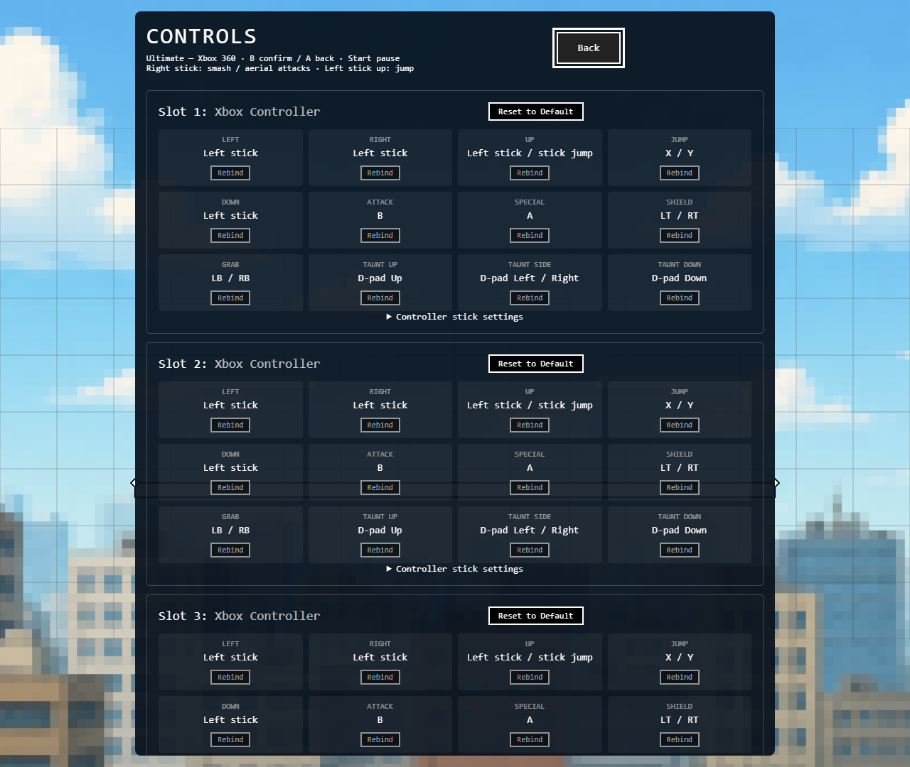
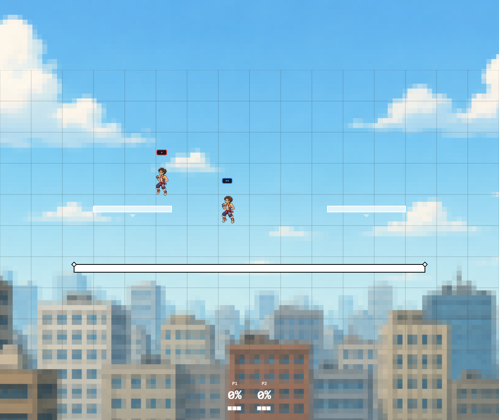

Xbox 360 — Ultimate positional layout
Batch 36 · November 4, 2026 · Profile ultimate-xbox360-v1
Implemented in gameplay, menus and prompts. Nintendo and Xbox print different letters at corresponding positions; this profile matches the physical positions of Ultimate’s Switch Pro defaults.
Implementation and evidence · Validation
| Action | Xbox 360 input |
|---|
| attack | B |
| special | A |
| jump | X / Y |
| shield | LT / RT |
| grab | LB / RB |
| movement | Left stick |
| smashAndAerial | Right stick |
| taunts | D-pad up / side / down |
| pause | Start |
| menuConfirm | B |
| menuCancel | A |
| unassignedCombat | Back / stick clicks / Guide |
Controls screen

Connected combinations
- Single shared profile drives gameplay action buttons, menu confirm/cancel/pause and Controls labels.
- Direct D-pad taunts no longer move or jump. Left stick supplies movement and stick jump. Back is not a taunt modifier.
- Jump buttons remain distinct through input transport; X+Y forces a short hop and a fresh second jump button creates an edge while the first remains held.
- Server derives controller flick-smashes from simulation-tick windows (horizontal 6, vertical 4 at normal sensitivity). Attack after the window selects the appropriate held-direction move.
- Controller shield+attack selects grab; A+B selects smash. Physical jump+attack retains the short-hop aerial shortcut.
- Right-stick aiming remains separate from left-stick movement; calibration and optional analog fields work for local and online play.
- No customizable gamepad button map previously existed to migrate. The versioned default profile replaces the hardcoded layout; saved slot assignments and stick calibration remain usable.
- Controls can be exited with A, confirmed with B, and shows all four slot mappings.
Verification
Button-profile contracts and authoritative combo checks passed. Four production browser checks cover the complete action loop, four-slot prompts, B-confirm/A-cancel, calibration persistence, Y jump and right-stick smash/aerial selection. Four-client synchronization and the fourteen-page production sprite smoke passed. The final client-regression status is in the validation file.

Physical controller check
- Refresh the game and open Controls. Verify B attack, A special, X/Y jump, LT/RT shield and LB/RB grab.
- In a match test each paired button independently, then X+Y short hop, shield+B grab, A+B smash, stick flick+B and held-direction+B.
- Confirm D-pad taunts leave the fighter in place; test right-stick attacks while moving the left stick.
- Test Start pause/resume, B menu confirmation and A cancellation, then disconnect/reconnect.
- Repeat on wired and wireless Xbox 360 controllers and all occupied player slots.
Limits and remaining parity
- Browser checks use simulated standard-mapping Xbox 360 devices; actual wired/wireless USB or receiver behavior still requires hardware testing.
- Button/action mapping is implemented; exact Ultimate analog thresholds, movement speed, trigger feel and full gameplay parity are not certified.
- This is the requested Xbox/Switch-Pro-position profile. Dedicated GameCube and sideways Joy-Con profiles are separate work.
- Keyboard bindings remain separate. Other Ultimate mechanics and specialized input interactions remain incomplete.
References